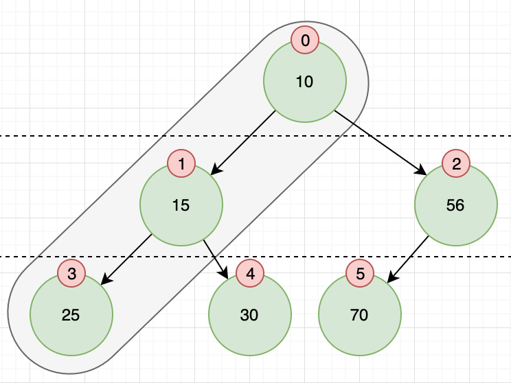

二叉堆
- 二叉堆是一颗 完全二叉树
- 左右子节点并无大小之分，只与父节点有大小之分，搜索树则不同：父节点大于左子树，小于右子树
- 大顶堆：大于等于 其孩子节点的值
- 小顶堆：小于等于 其孩子节点的值
- 每个节点的子树都是堆树
- 堆树不同于搜索树，并不善于用来查找元素，主要用来找最大或最小值 或 最大或最小优先级的节点
堆树的结构

# 存储结构
[10][15][56][25][30][70]
__0___1___2___3___4___5
[10][15][56][25][30][70]
__0___1___2___3___4___5___6- 假如数组的 0号元素是堆顶，则：
- 节点
i的 父节点：(i – 1) / 2|(i - 1) >> 1 节点
i的 左节点：2 * i + 1|i << 1 + 1- 第一个节点的左节点 =
2 * 0 + 1 = 1即15
- 第一个节点的左节点 =
节点
i的 右节点：2 * i + 2|i << 1 + 2- 第一个节点的右节点 =
2 * 0 + 2 = 2即56
- 第一个节点的右节点 =
- 假如数组的 1个元素是堆顶，0号用来保存临时数据，则：
- 节点
i的 父节点：i / 2|i >> 1 节点
i的 左节点：2 * i|i << 1节点
i的 右节点：2 * i + 1|i << 1 + 1
构造堆树
- 新插入的元素，放在现有数据的最后，仅需与父节点比大小*并交换位置*，保证当前节点到根节点是有序的即可
- 大顶堆：如果节点比父节点大，则与父节点交换位置
- 小顶堆：如果节点比父节点小，则与父节点交换位置
交换位置是数组元素的交换
public static void shiftUp(Integer[] dataArr, int newData, Comparator<Integer> c) { // 这里首位不存储数据，保存数据长度 int index = ++dataArr[0]; // 新数据入位 dataArr[index] = newData; // 父节点 int parentIndex = index / 2; // 新插入节点与父节点比较大小并交换，直到根节点 for (; parentIndex > 0; ) { final int parentData = dataArr[parentIndex]; // 父 > 子 就往上调整（小顶堆） if (c.compare(parentData, newData) > 0) { ArrayTreeTool.swap(dataArr, parentIndex, index); } else { break; } // 交换后记录节点位置，继续向上比较交换 parentIndex = index / 2; } }
删除树节点
- 按定义，堆中每次都只能删除第1个数据，第1个数据是 最大 或者 最小的数据
- 再将最后一个数据的值赋给根结点（第1个数据的位置）
再从根结点开始进行一次从上向下的调整，父节点与两个子节点找出最大(最小)的与之交换
public static Integer shiftDown(Integer[] dataArr, Comparator<Integer> c) { // 返回堆顶节点 Integer firstData = dataArr[1]; // 首末未交换 ArrayTreeTool.swap(dataArr, 1, dataArr[0]); // 元素个数 -1 Integer size = --dataArr[0]; // 第一个节点作为父节点，从上往下交换 int pIdx = 1; for (; pIdx <= size; ) { // 左子树 int minIdx = pIdx * 2; // 没有左子树则结束 if (minIdx > size) { break; } // 右子树 int rIdx = pIdx * 2 + 1; // 右字数存在 if (rIdx <= size) { // 找最小的子节点 minIdx = c.compare(dataArr[rIdx], dataArr[minIdx]) < 1 ? rIdx : minIdx; } // 最小子节点 与 父节点 比较 找最小 minIdx = c.compare(dataArr[pIdx], dataArr[minIdx]) < 1 ? pIdx : minIdx; // 如果最小节点扔仍然是自己，则无需进行交换 if (minIdx == pIdx) { break; } ArrayTreeTool.swap(dataArr, minIdx, pIdx); // 子节点作为父节点，继续往下找 pIdx = minIdx; } return firstData; }
如何使用
Integer[] originData = new Integer[]{0, 1, 2, 3, 4, 5, 6, 7, 8, 9};
System.out.println(Arrays.asList(originData));
for (int i = 1; i < originData.length; i++) {
// 构建 小顶堆
shiftUp(originData, originData[i], Integer::compare);
// 构建 大顶堆
// shiftUp(originData, originData[i], (n, p) -> -Integer.compare(n, p));
}
System.out.println(Arrays.asList(originData));
// 依次移除所有的数据，即堆排序
for (; originData[0] > 0; ) {
System.out.println(shiftDown(originData, (n, p) -> Integer.compare(n, p)));
}
System.out.println(Arrays.asList(originData));小结
- 堆树的主要特性在于：堆顶的元素(第1个元素)是 最大/最小 的元素，但是第2个并不一定是 次大或次小 的
- 所以堆树并不善于用来查找元素，主要用来找最大或最小值 或 最大或最小优先级的节点
- 常见使用场景有
- 优先队列： 堆顶的元素就是优先级最高的，取出后再按照 删除树节点 的流程调整堆
- Top K： 按照优先级队列的流程 取 K 次，即可获取最大或最小的 K 个数据
- 堆排序： 堆排序即 TOP K，
K = array.length，@see 堆排序
 Feb 23, 2020
Feb 23, 2020
 Edit this page
Edit this page